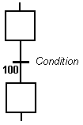
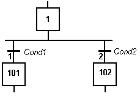

Transitions represent a condition that changes the program activity from a step to another. A transition is identified by its number prefixed by GT.
To change the number of a step, transition or jump, select it and hit Ctrl+ENTER keys.
The transition is marked by a small horizontal line that crosses a link drawn between the two steps:
|
 |
Each transition is identified by a unique number in the SFC program. Each transition must be completed with a boolean condition that indicates if the transition can be crossed. The condition is a BOOL expression. In order to simplify the chart and reduce the number of drawn links, you can specify the activity flag of a step (GSnnn.X) in the condition of the transition. |
Transitions define the dynamic behaviour of the SFC chart, according to the following rules:
„ A transition in crossed if:
• its condition is TRUE.
• and if all steps linked to the top of the transition (before) are active.
„ When a transition is crossed:
• all steps linked to the top of the transition (before) are de-activated.
• all steps linked to the bottom of the transition (after) are activated.
It is possible to link a step to several transitions and thus create a divergence. The divergence is represented by a horizontal line. Transitions after the divergence represent several possible changes in the situation of the program.
All conditions are considered as exclusive, according to a left to right priority order. It means that a transition is considered as FALSE if at least one of the transitions connected to the same divergence on its left side is TRUE.

Transition 1 is crossed if:
step 1 is active
and Cond1 is TRUE
Transition 2 is crossed if:
step 1 is active
and Cond2 is TRUE
and Cond1 is FALSE
Some run-time systems may not support exclusivity of the transitions within a divergence. Please refer to OEM instructions for further information about SFC support.